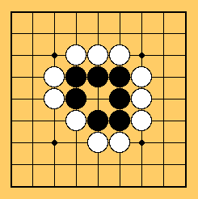
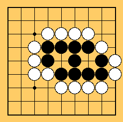

Table of Contents
Table of Contents
For example, in the figure below, the black stones are surrounded completely - nowhere to escape - just waiting to be killed by white's move in the center.

Although black is surrounded, white can't capture black. There are still 2 places to kill black group - they are both surrounded by black where white can't play.
Therefore, once you make 2 separate spaces, or 2 eyes, your stones
will never be captured.
Such group of stones is said to be alive.

Could you capture them?
I bet you couldn't! They are all alive because they each have 2 eyes.
 Next
Next Home
Home